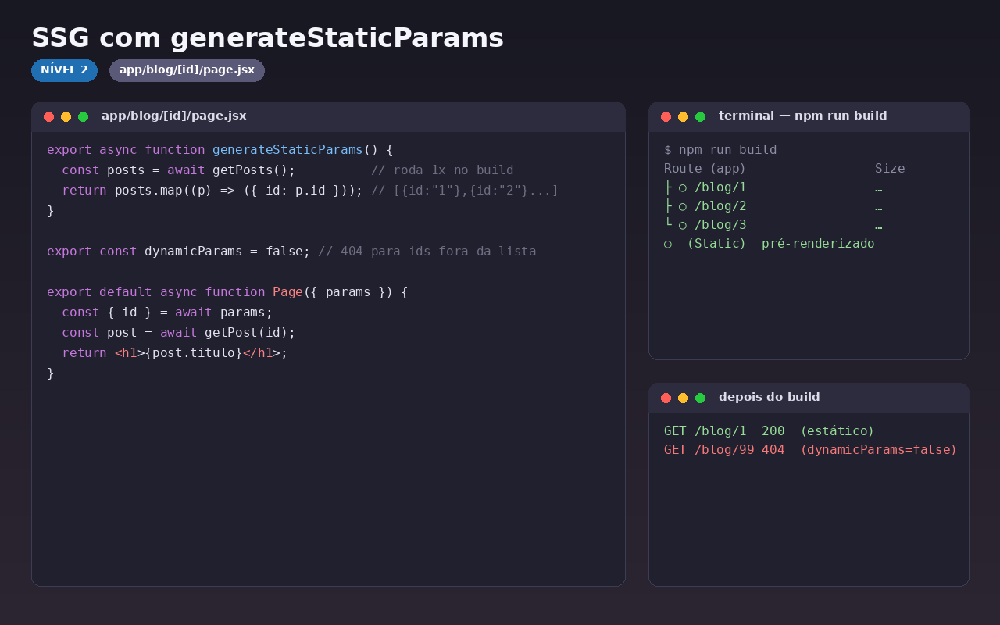

Geração estática: generateStaticParams
A Ana 👩💻 reparou que o blog dela raramente muda: os mesmos 50 posts servem para todo mundo, o dia inteiro. Em vez de montar a página a cada visita, ela decidiu construir as páginas uma única vez, no build, e servir arquivos HTML prontos — rápido como um estático, mas gerado a partir de rotas dinâmicas. Essa é a SSG com generateStaticParams.
- O que
generateStaticParamsfaz nonpm run build - Pré-renderizar
/blog/1,/blog/2… a partir de uma lista dynamicParams = false: 404 para valores fora da lista- ISR:
export const revalidate = 60para recriar a página de tempos em tempos
A ideia: imprimir o cardápio antes de abrir o restaurante
Um restaurante com cardápio fixo imprime os menus na gráfica e deixa cópias na entrada — o cliente pega na hora, sem esperar o cozinheiro. Um restaurante de pedidos sob medida prepara cada prato quando o pedido chega. O generateStaticParams é a gráfica: na hora do npm run build, o Next.js roda a sua função, pega a lista de parâmetros (os 50 posts), e já renderiza todas as páginas — /blog/1 até /blog/50 — salvando o HTML de cada uma no servidor.
Quando alguém visita /blog/7, o servidor não precisa rodar código nenhum: é só entregar o arquivo pronto. É a combinação perfeita de rota dinâmica com performance de site estático. E se chegar um pedido fora do cardápio — /blog/999? Aí depende da configuração dynamicParams, que veremos já já.
E quando o cardápio muda? Se a Ana publicar o post 51, ela não precisa dar build de novo na hora: com export const revalidate = 60, a primeira visita depois de 60 segundos gatilha uma reconstrução em segundo plano (ISR) — o visitante seguinte já pega a página nova.
Configurando a rota estática
Na mesma página dinâmica app/blog/[id]/page.jsx, exporte generateStaticParams. Ela deve devolver um array de objetos, um por rota, com as mesmas chaves de params:
async function getPosts() {
const res = await fetch("https://api.exemplo.com/posts");
return res.json(); // [{ id: "1", … }, { id: "2", … }, …]
}
// roda UMA vez no build: devolve todos os params possíveis
export async function generateStaticParams() {
const posts = await getPosts();
return posts.map((post) => ({ id: post.id }));
// -> [{ id: "1" }, { id: "2" }, … { id: "50" }]
}
// false = só as rotas da lista existem; /blog/999 -> 404
// true = rotas novas são geradas na primeira visita (padrão)
export const dynamicParams = false;
// ISR: depois de 60s, a próxima visita recria a página em segundo plano
export const revalidate = 60;
export default async function BlogPostPage({ params }) {
const { id } = await params;
const res = await fetch(`https://api.exemplo.com/posts/${id}`);
const post = await res.json();
return <h1>{post.titulo}</h1>;
}
No terminal, o npm run build mostra cada rota gerada e marca com ○ (Static) que aquilo é pré-renderizado:
Route (app) Size First Load JS ├ ○ /blog/[id] 1.2 kB 90 kB ├ ├ /blog/1 (estático) ├ ├ /blog/2 (estático) └ └ … (até /blog/50) ○ (Static) prerendered as static HTML
| Export | Onde | Efeito |
|---|---|---|
generateStaticParams() | page/layout dinâmico | roda no build e devolve [{ id: "1" }, …]; cada item vira uma página estática |
dynamicParams = false | segmento dinâmico | URLs fora da lista de generateStaticParams dão 404 |
dynamicParams = true (padrão) | segmento dinâmico | URL nova é gerada na primeira visita e guardada em cache |
export const revalidate = 60 | page/layout/rota | ISR: recria a página em segundo plano após 60s |
export const dynamic = "force-static" | page | força a página inteira a ser estática (ignora searchParams) |
Missão: simulando o generateStaticParams: a partir da lista de posts, gere o array de parâmetros [{ id: "1" }, { id: "2" }, …] usando posts.map(...). Rode e veja a lista de rotas prontas para o "build".
function App() {
const posts = [
{ id: "1", titulo: "Primeiro post" },
{ id: "2", titulo: "Rotas no Next" },
{ id: "3", titulo: "Server Actions" },
];
// 👉 igual ao generateStaticParams: um { id } por post
const params = [];
return (
<div style={{ fontFamily: "monospace", padding: 16 }}>
<p>Rotas geradas no build:</p>
<ul>
{params.map((p) => (
<li key={p.id}>/blog/{p.id}</li>
))}
</ul>
</div>
);
}function App() {
const posts = [
{ id: "1", titulo: "Primeiro post" },
{ id: "2", titulo: "Rotas no Next" },
{ id: "3", titulo: "Server Actions" },
];
const params = posts.map((post) => ({ id: post.id }));
return (
<div style={{ fontFamily: "monospace", padding: 16 }}>
<p>Rotas geradas no build:</p>
<ul>
{params.map((p) => (
<li key={p.id}>/blog/{p.id}</li>
))}
</ul>
</div>
);
}
npm run build, cada item de generateStaticParams vira uma página estática; com dynamicParams = false, /blog/99 devolve 404.Quando dá errado
generateStaticParams. É fácil devolver ["1", "2"] (array de strings) em vez de [{ id: "1" }, { id: "2" }] (array de objetos com a chave do segmento):Error: Page "/blog/[id]" is missing "generateStaticParams()" so it cannot be used with "output: export" config. // ou: Invalid generateStaticParams value: expected an array of objects with keys matching the dynamic segment names, got ["1","2"]
Tradução: o valor devolvido não é um array de objetos cujas chaves batem com o nome do segmento dinâmico. Correção: devolva sempre [{ id: … }, …] — com a mesma chave usada na pasta [id]. Outro erro comum: ligar dynamicParams = false e esquecer de listar rotas novas no build — aí a rota nova dá 404 até o próximo deploy.
Exercícios
1. O que generateStaticParams deve devolver para a rota /blog/[id]?
2. Com export const dynamicParams = false, o que acontece com /blog/999 se a lista só tem até o 50?
3. Complete: para recriar a página em segundo plano a cada 60 segundos (ISR), qual linha você exporta na página?